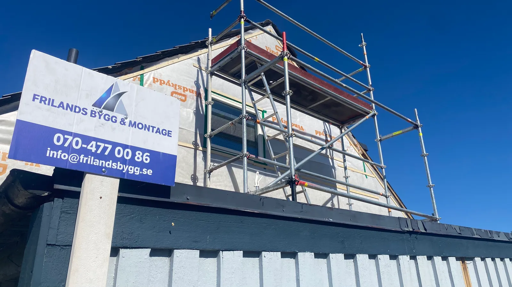

Fantastiskt utfört arbete! Hög kvalite och noggrannhet.
Dzemila SReco · juli 2026 ↗

Stora idéer. Små detaljer. Vi hjälper dig att
skapa ett hem som känns rätt — hela vägen.
Renovera, bygga till eller skapa en ny plats utomhus. Frilands Bygg kombinerar bred erfarenhet med omsorg om just ditt hem.
Från en uppdatering av ett rum till en större renovering. Vi hjälper dig att planera arbetet och få delarna att hänga ihop.
02Utöka det som redan finns. Vi hjälper dig med tillbyggnader, ombyggnader och mindre fristående byggnader.
03Altaner, staket, pergolor och uterum som ger trädgården nya möjligheter. Vi hjälper dig från idé till färdigt snickeri.
04Fasadrenovering, panelbyte och målning med omsorg om både uttryck och funktion.
05Funktion, material och genomtänkta detaljer. Vi hjälper dig med renovering av kök och badrum utifrån hur du vill leva.
06Vi hjälper dig att välja och montera nya fönster och dörrar med hänsyn till husets stil och din vardag.
07Nya kulörer och omsorgsfullt underarbete för väggar, tak och fasader. För både privatpersoner och företag.
Fantastiskt utfört arbete! Hög kvalite och noggrannhet.
Frilands löste alla problem snabbt, proffsigt och med supertrevligt bemötande.
Perfekta resultat och värt varenda krona!
Korta utdrag ur publicerade omdömen. Reco-betyget gäller 1 omdöme, markerat som okontrollerat på Reco. Kontrollerat 18 november 2026.
Vi pratar om dina idéer, ser platsens förutsättningar och ringar in vad du behöver.
Du får ett prisförslag och vi går igenom material, omfattning och hur arbetet ska läggas upp.
Vi utför arbetet och håller dialogen levande. Förändringar stämmer vi av tillsammans.
Vi tittar på resultatet tillsammans och går igenom det som hör till det färdiga arbetet.
 Erhan Baksi Projektledare & arbetsledare
Erhan Baksi Projektledare & arbetsledareDet ska kännas bra att släppa in någon i sitt hem. Hos Frilands möter du Erhan och ett personligt engagemang för ditt bygge.
Med över 20 års erfarenhet inom bygg tar vi oss an både mindre arbeten och större förändringar. Vi lyssnar, planerar och bygger med stolthet.
Vi utgår från Västerhaninge och arbetar i Haninge och Storstockholm. Hör av dig och berätta var ditt projekt finns.
Ja, Frilands erbjuder kostnadsfri konsultation och hembesök för att prata om projektets förutsättningar och ta fram ett prisförslag.
Vi hjälper till med hanteringen när arbetet uppfyller villkoren. Din rätt till avdrag och aktuella regler kontrolleras inför projektet.
Ring 070-477 00 86 eller mejla info@frilandsbygg.se. Berätta gärna vad du vill göra, var det ligger och när du önskar komma igång.